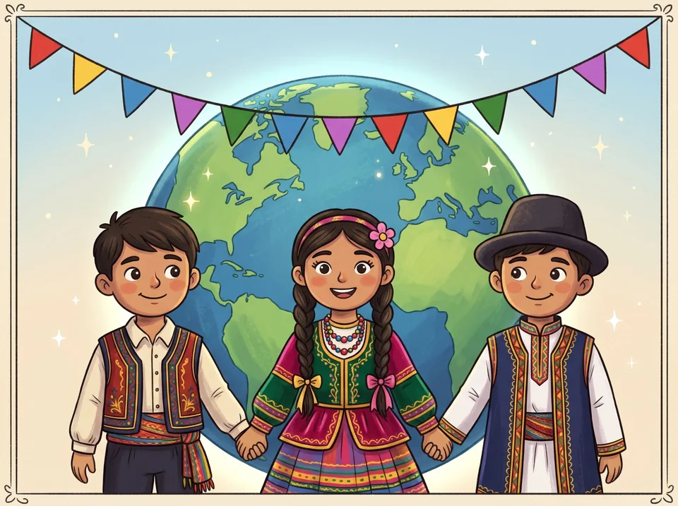
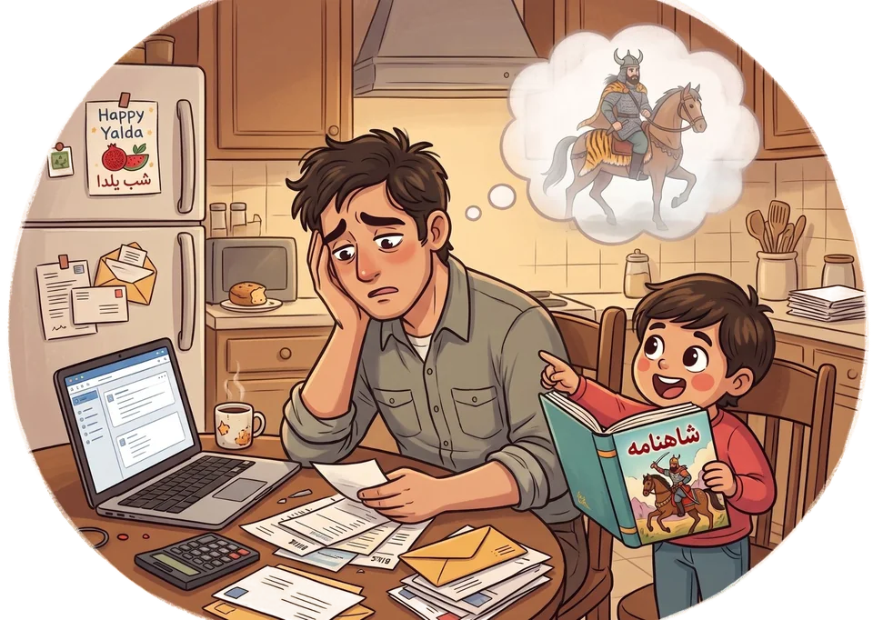

Keeping Persian alive, one generation to the next
Planet Pooyah exists to stop the quiet loss of Persian across generations of the Iranian diaspora: the language, the history, the literature, and the confidence that comes with knowing them.

The problem is real, and it's growing
Studies of Iranian Americans keep finding the same pattern from one generation to the next.
-
First generation
Grew up in Iran. Speaks, reads and writes Persian, and knows the history, poetry and traditions firsthand.
-
Second generation
Grows up abroad, speaking Persian at home. Often can't read or write it, and knows less of the history and literature.
-
Third generation
Reading, writing and a detailed knowledge of Iran's history and literature are often gone.

It isn't a lack of wanting to
Parents want their children to know where they come from. What they're short of is time, energy and expertise.
Many are working professionals without hours each week to teach the alphabet, classical poetry and 2,500 years of history. Many left Iran young, or never studied these subjects formally themselves. So the gap grows with each generation.
"I want my kids to know who they are and where they come from, and I don't have three free hours a week to teach it myself."
What Planet Pooyah does
A game-like app for Persian and the culture behind it, with the short lessons, streaks and instant feedback that make language apps a daily habit.
Made for children ages 5 to 14 and managed by parents. Adults learn with it too.
- The Persian alphabet, with letters to trace, everyday words and conversation.
- Shahnameh stories, Iran's history from Cyrus the Great, and traditions like Nowruz and Yalda.
- Streaks, XP, an avatar to dress and places to unlock keep children coming back.
- Reviews along the way, so it all sticks.

Why it works, and why it matters
Weekend schools and tutors do valuable work, but they depend on where you live, your schedule, the cost and the teacher. Books and videos lack the structure and the fun that keep children going.
Planet Pooyah runs on any device, a few minutes a day, and takes care of the curriculum, the order and the motivation, so parents don't have to become teachers.
A child who can read a poem, catch a reference to Rostam or explain Nowruz to a friend gains confidence and a sense of belonging. This isn't nostalgia: it's the most practical way to keep Persian reading and Iranian culture alive, through something children actually want to open every day.